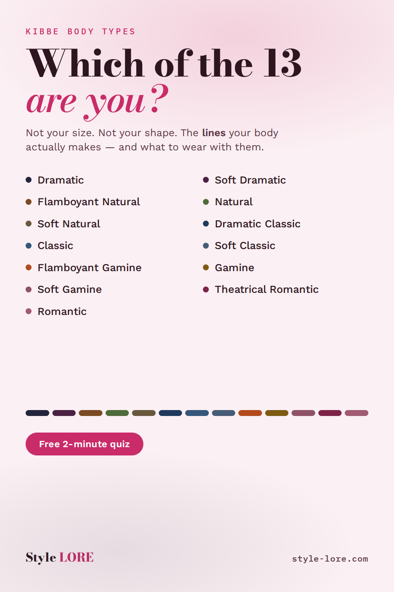

Day 1Kibbe Body Types
Title
The 13 Kibbe body types, explained
Destination link
https://style-lore.com/
Description
Kibbe isn't about your size — it's about the lines your body actually makes. Sharp or soft. Long or compact. Once you know which of the 13 types you are, shopping stops being guesswork. Free two-minute quiz, no sign-up needed to see your result. style-lore.com